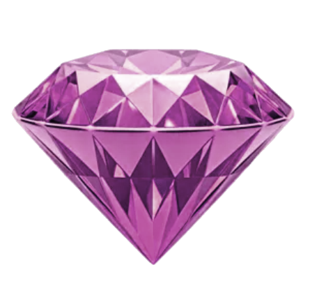
ЛИЧНЫЙ УГОЛОК РОЗОВОГО ИНТЕРНЕТАONLY FOR EVA
Ева,
с днем
рождения!
Ева, тебе начислено 999 очков гламура.
Голуби выдали квитанцию.
нажми. голуби всё организовали.
листай, тут ещё кое-что ↓СООБЩЕНИЕ
ДЛЯ ЕВЫ
Библия, Притчи 3:
Притчи, 3 глава — Библия — Новый русский перевод3 Да не покинут тебя любовь и верность; обвяжи ими свою шею, запиши их на дощечке сердца.
4 Тогда ты найдешь расположение и доброе имя у Бога и у людей.
5 Доверяй Господу от всего сердца и не полагайся на собственный разум;
6 познавай Его во всех своих путях, и стези твои Он сделает ровными.
У нас тут
всё серьёзно.
Три эксперта. Вердикт положительный.
Погладь каждого — они на работе.
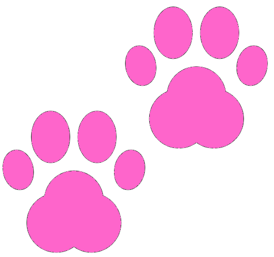
КОТ В ШОКЕ
Он увидел то, чего не должен был видеть...
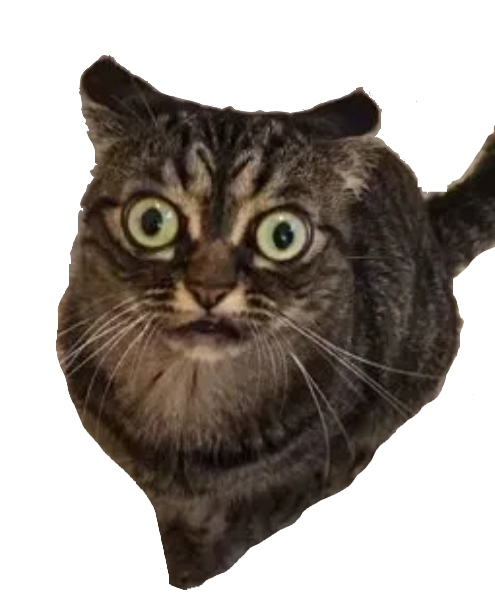
Он даже не моргает.Свидетель пока молчит.
Зато глаза уже написали объяснительную.
4 версии. 1 видеоулика. Кот знает правду.
Запись не загрузилась. Нажми на кружок ещё раз или открой видео отдельно.
Открыть видеоулику ↗«Кто не работает,
тот ест».
Сборщики требуют справедливости.
Ева, в следующий раз — с корзинкой!
Что в кружочке? Читать историю
Катя рассказывает: кто-то собирает ягоды в лесу, а кто-то их только ест. Катя собирала, Богдан собирал, а Ева ела и прямо в камеру заявила: «А я всё съем».
Сборщики недовольны. Богдану остаётся только переделать поговорку: «Кто не работает, тот ест». Вот от чего у кота такие глаза.
✦ Ни один кот не был готов к этой информации. ✦
ГОЛУБИНОЕ
ТЕЛЕВИДЕНИЕ
Ева, твори добро!
И собирай ягоды тоже — голуби всё видят.
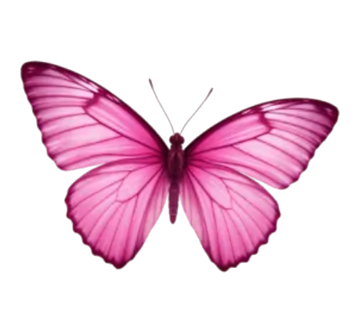
Когда включишь видео, музыка подождёт.
Не показывает? Смотреть на YouTube ↗Хороший вкус.
Громкий звук.
Розовый Winamp повзрослел.
И теперь помещается в твоём телефоне.
музыка останется с тобой, пока ты листаешь
Голубь протокола.
Международного.
выражает уважение
Нажми на голубя. Он немного драматичный.
А пять «курлык» подряд — уже вечеринка…
Хорошая
компания.
Семь кадров, которые хочется оставить.
Листай — здесь все свои.
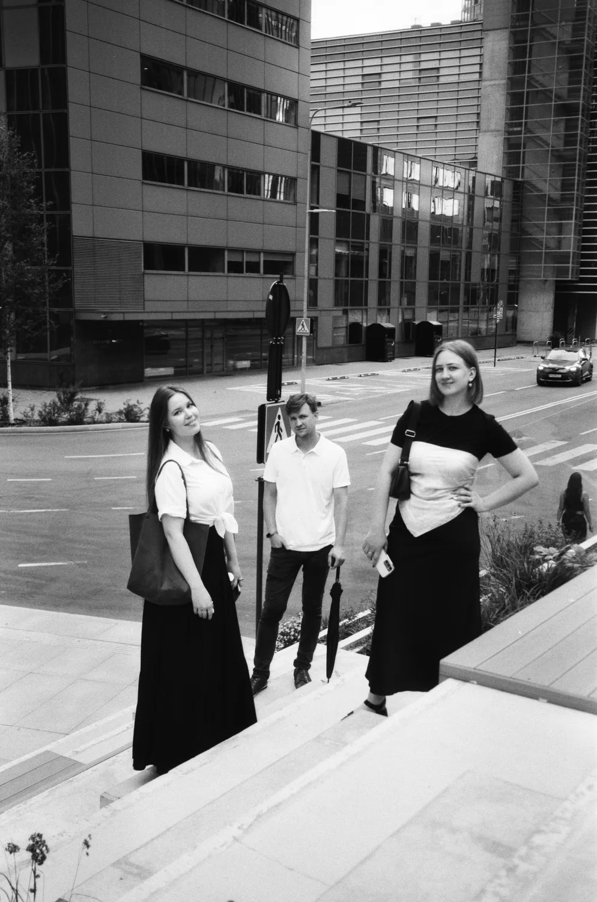
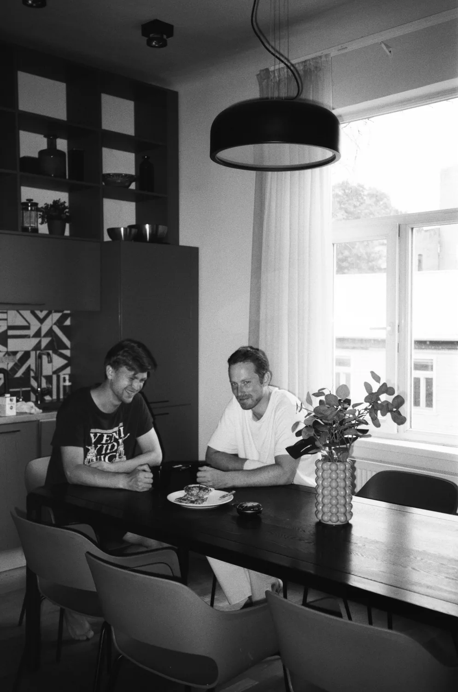
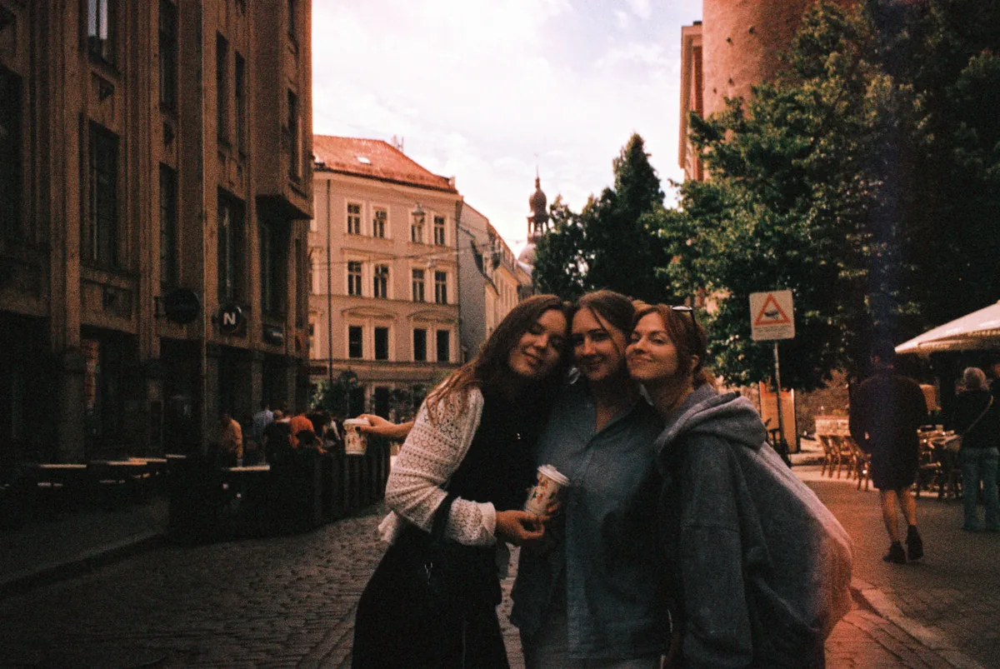
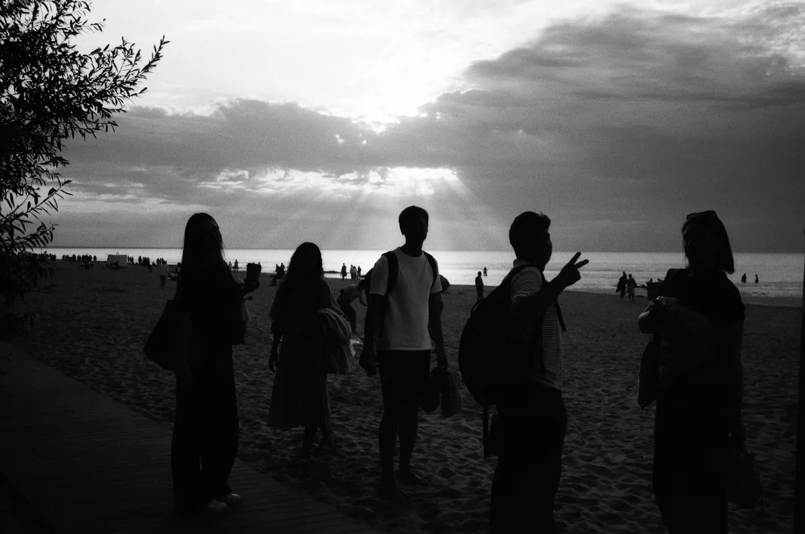
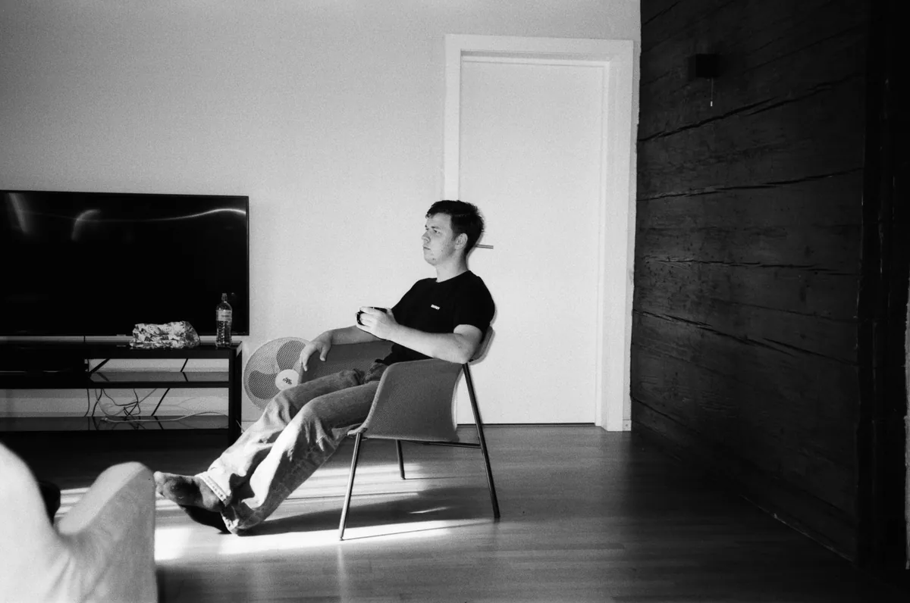
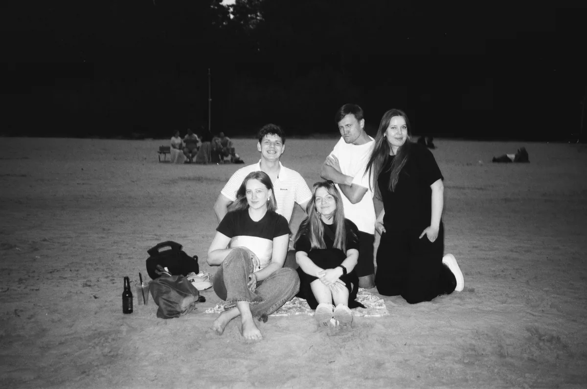
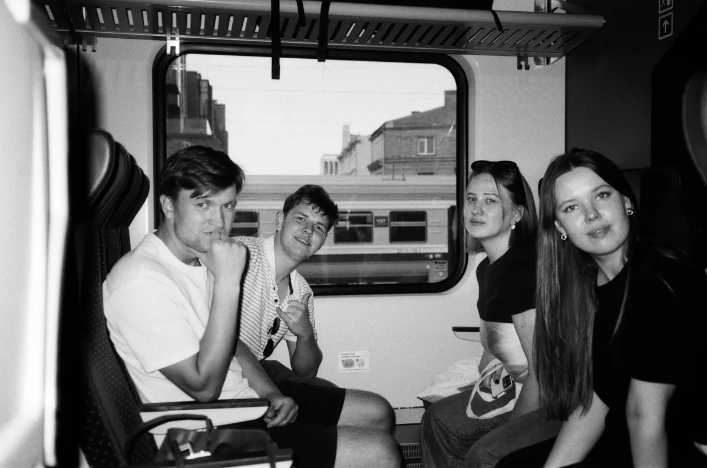
Листай пальцем. Нажми ↗, чтобы открыть фото.